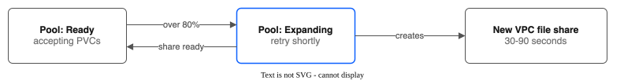

Day-2 Operations Runbook — IBM VPC File Pool CSI Driver¶
Step-by-step procedures for operating the pool CSI driver in production.
Routine Health Checks¶
Daily¶
# 1. Verify all driver pods are running
kubectl get pods -n kube-system -l app.kubernetes.io/name=ibm-vpc-file-pool-csi,app.kubernetes.io/component=controller
kubectl get pods -n kube-system -l app.kubernetes.io/name=ibm-vpc-file-pool-csi,app.kubernetes.io/component=node
# 2. Check pool phases — all should be "Ready"
kubectl get filesharepools
# 3. Check for pending PVCs using pool StorageClasses
kubectl get pvc --all-namespaces -o wide | grep -E "Pending.*ibm-vpc-file-pool"
# 4. OpenShift: alerts are being evaluated (user workload monitoring is on)
oc -n openshift-user-workload-monitoring get pods
oc -n ibm-vpc-file-pool-csi-monitoring get events | grep UserWorkloadMonitoringOff # no output is good
# 5. Check for controller errors in the last 24h
kubectl logs -n kube-system -l app.kubernetes.io/name=ibm-vpc-file-pool-csi,app.kubernetes.io/component=controller \
-c csi-controller --since=24h | grep -c -i "error"
Weekly¶
# 1. Pool capacity check — flag pools over 70% utilization
kubectl get filesharepools -o custom-columns=\
'NAME:.metadata.name,CAPACITY:.status.totalCapacityGB,ALLOCATED:.status.totalAllocatedGB,SHARES:.status.shareCount,PVCS:.status.totalPVCCount,PHASE:.status.phase'
# 2. Check for orphaned SubVolumes (SubVolume exists, PVC doesn't)
for sv in $(kubectl get subvolumes -o jsonpath='{.items[*].metadata.name}'); do
ns=$(kubectl get subvolume $sv -o jsonpath='{.spec.pvcNamespace}')
pvc=$(kubectl get subvolume $sv -o jsonpath='{.spec.pvcName}')
if ! kubectl get pvc -n "$ns" "$pvc" &>/dev/null 2>&1; then
echo "Orphaned: $sv (PVC $ns/$pvc not found)"
fi
done
# 3. Replication health (if DR is configured)
kubectl get replicationpolicies -o custom-columns=\
'NAME:.metadata.name,SOURCE:.spec.sourcePoolName,SCHEDULE:.spec.schedule,PHASE:.status.phase,LAST_SYNC:.status.lastSyncTime,FAILURES:.status.consecutiveFailures'
# 4. Pause/resume replication (if needed)
# Pause: kubectl annotate replicationpolicy <name> storage.ibmcloud.io/paused=true
# Resume: kubectl annotate replicationpolicy <name> storage.ibmcloud.io/paused-
Monthly¶
# 1. VPC share quota check
ibmcloud is shares --output json | jq length
echo "VPC account limit: 300 shares"
# 2. Share health audit — verify all shares are in stable state
for pool in $(kubectl get filesharepools -o jsonpath='{.items[*].metadata.name}'); do
echo "=== Pool: $pool ==="
kubectl get fsp "$pool" -o jsonpath='{range .status.shares[*]} {.shareID} state={.state} ip={.mountTargetIP}{"\n"}{end}'
done
# 3. Review VPC API error trends (requires Prometheus)
# In Prometheus UI or Grafana:
# rate(vpc_file_pool_api_calls_total{status="error"}[7d])
# 4. Review and rotate API keys if required by security policy
# See "API Key Rotation" section below
Pool Expansion¶
How Auto-Expansion Works¶
When the pool's allocated capacity crosses expandThresholdPercent (default 80%), the reconciler creates a new VPC file share in the background. This takes 30-90 seconds. A PVC request that finds no share with room, while autoExpand is on, also creates the share itself (the request waits for the VPC call and the provisioner retries). During expansion, the pool phase changes to Expanding and new PVC requests may see a brief "pool is expanding, retry shortly" message before the share is ready.

Triggering Manual Expansion¶
# Option 1: Increase maxShares to allow more shares
kubectl patch filesharepool <pool-name> --type merge \
-p '{"spec":{"maxShares":20}}'
# Option 2: Lower the threshold temporarily to trigger expansion sooner
kubectl patch filesharepool <pool-name> --type merge \
-p '{"spec":{"expandThresholdPercent":50}}'
# Reset after expansion completes:
kubectl patch filesharepool <pool-name> --type merge \
-p '{"spec":{"expandThresholdPercent":80}}'
Troubleshooting Expansion Failures¶
If the pool stays in Expanding for more than 10 minutes:
# 1. Check controller logs for VPC API errors
kubectl logs -n kube-system -l app.kubernetes.io/name=ibm-vpc-file-pool-csi,app.kubernetes.io/component=controller \
-c csi-controller --tail=200 | grep -i "expand\|create.*share\|error"
# 2. Check VPC share quota
ibmcloud is shares --output json | jq length
# 3. Check if the share was created in VPC but not yet detected
ibmcloud is shares --output json | jq '.[] | select(.name | contains("<pool-name>"))'
# 4. Check VPC API status
ibmcloud is shares --output json | jq '.[0].lifecycle_state'
Common causes:
- VPC share quota exceeded (300 shares) — delete unused shares or request quota increase
- VPC API rate limiting — the controller retries automatically with backoff
- Invalid profile or zone in pool spec — check ibmcloud is share-profiles
Share Draining¶
When to Drain¶
- A share needs to be decommissioned (e.g., moving to a different tier)
- A share is in a degraded state that cannot be recovered
- Capacity rebalancing requires consolidating PVCs to fewer shares
Draining Procedure¶
# 1. Mark the share for draining
kubectl patch filesharepool <pool-name> --type merge \
-p '{"spec":{"drainShares":["<share-id>"]}}'
# 2. Monitor drain progress
kubectl get fsp <pool-name> -o jsonpath='{.status.drainStatus}' | jq .
# 3. Check remaining SubVolumes on the draining share
kubectl get subvolumes -l storage.ibmcloud.io/share-id=<share-id>
# 4. Wait for applications to be redeployed with new PVCs, or manually
# delete PVCs on the draining share (applications must be stopped first)
kubectl get subvolumes -l storage.ibmcloud.io/share-id=<share-id> \
-o jsonpath='{range .items[*]}{.spec.pvcNamespace}/{.spec.pvcName}{"\n"}{end}'
# 5. Once all SubVolumes and snapshots on it are gone, the share is fully drained.
# Snapshots keep their data on the share, so delete their VolumeSnapshots too
# (status.drainStatus[].remainingSnapshots counts them).
# The DrainComplete condition is set on the pool
kubectl get fsp <pool-name> -o jsonpath='{.status.conditions}' | jq '.[] | select(.type=="DrainComplete")'
# 6. To remove the drained share: keep it on the drain list while you delete it.
# If it leaves the list first, it takes new volumes again within about 60 s.
ibmcloud is share-delete <share-id> -f
# Wait until the share is gone from the pool status (no PVCs left, so the
# pool drops it), then take it off the list.
kubectl get fsp <pool-name> -o jsonpath='{.status.shares[*].shareID}'
kubectl patch filesharepool <pool-name> --type merge -p '{"spec":{"drainShares":[]}}'
# To stop draining instead: take the share off the list. If the VPC reports the
# share healthy, it takes new volumes again within one reconcile (about 60 s).
kubectl patch filesharepool <pool-name> --type merge -p '{"spec":{"drainShares":[]}}'
Note: Draining prevents new allocations to the share but does not migrate existing data. Applications must create new PVCs to move off the draining share.
Share Health Recovery¶
Automatic Recovery (v0.11.0+)¶
The reconciler automatically handles shares with missing mount targets:
- Detects stable shares with no mount target IP
- Attempts to create a VPC mount target
- If creation succeeds, the share becomes available for allocations
- If creation fails, the reconciler logs
Failed to create mount target for shareand tries again on the next reconcile. The share is not markeddraining, and the pool uses its other shares meanwhile
Manual Recovery for Degraded Shares¶
# 1. Identify unhealthy shares
kubectl get fsp <pool-name> -o jsonpath='{range .status.shares[*]}{.shareID} state={.state} ip={.mountTargetIP}{"\n"}{end}'
# 2. Check the VPC share status
ibmcloud is share <share-id> --output json | jq '{lifecycle_state, health_state, health_reasons}'
# 3. Check the share's access mode:
ibmcloud is share <share-id> --output json | jq '.access_control_mode'
# "security_group" = the mode the driver uses for new mount targets
# "vpc" = IBM no longer allows new mount targets for this mode: replace the share
# 4. For a share that cannot get a mount target, drain it
kubectl patch filesharepool <pool-name> --type merge \
-p '{"spec":{"drainShares":["<share-id>"]}}'
Recovering from Stale NFS Mounts¶
If pods report "Stale file handle" errors after a share recovery:
# 1. Identify affected node
NODE=$(kubectl get pod <affected-pod> -o jsonpath='{.spec.nodeName}')
# 2. Delete the affected pod — kubelet remounts on restart
kubectl delete pod <affected-pod>
# 3. If many pods on the same node are affected, restart the node agent
kubectl delete pod -n kube-system -l app.kubernetes.io/name=ibm-vpc-file-pool-csi,app.kubernetes.io/component=node \
--field-selector spec.nodeName=${NODE}
Capacity Rebalancing¶
Identifying Imbalanced Pools¶
# Check per-share utilization within a pool
kubectl get fsp <pool-name> -o jsonpath='{range .status.shares[*]} {.shareID} capacity={.totalGB} allocated={.allocatedGB} pvcs={.pvcCount}{"\n"}{end}'
With spread strategy, shares should have roughly equal utilization. With binpack, shares fill sequentially (imbalance is expected).
Rebalancing Procedure¶
There is no automated rebalancing. To manually rebalance:
- Identify the overloaded share and the underloaded share
- Delete PVCs from the overloaded share (after stopping the application)
- Recreate the PVCs — the allocator distributes them according to the strategy
- Restart the application
For less disruptive rebalancing, switch the pool to spread strategy:
kubectl patch filesharepool <pool-name> --type merge \
-p '{"spec":{"allocationStrategy":"spread"}}'
New PVCs will be placed on the share with the most free capacity, gradually evening out utilization.
Failover Handling¶
Single Share Failure¶
Impact: PVCs on the affected share experience I/O errors. Other shares continue normally.
Steps:
# 1. Identify the failed share
kubectl get fsp <pool-name> -o jsonpath='{range .status.shares[*]}{.shareID} state={.state}{"\n"}{end}'
# 2. The pool manager automatically stops new allocations to the failed share
# 3. Check affected PVCs
kubectl get subvolumes -l storage.ibmcloud.io/share-id=<failed-share-id>
# 4. Monitor VPC share recovery
ibmcloud is share <share-id> --output json | jq '{lifecycle_state, health_state}'
# 5. Once the share returns to stable, the pool recovers automatically
# 6. If the share is permanently lost, drain it and let PVCs be recreated
Controller Failure¶
Impact: New PVC operations (create/delete/expand) are paused. Existing mounted PVCs continue working.
Steps:
# 1. Check controller pod status
kubectl get pods -n kube-system -l app.kubernetes.io/name=ibm-vpc-file-pool-csi,app.kubernetes.io/component=controller
# 2. Check for OOM, CrashLoop, or other failures
kubectl describe pod -n kube-system <controller-pod>
# 3. Check previous crash logs
kubectl logs -n kube-system <controller-pod> -c csi-controller --previous
# 4. If stuck, delete the pod — it will restart and re-read CRD state
kubectl delete pod -n kube-system <controller-pod>
# 5. If leader election is stuck, delete the lease
kubectl delete lease -n kube-system ibm-vpc-file-pool-csi-leader
Node Agent Failure¶
Impact: New pod mounts on the affected node fail. Existing mounts continue working (NFS mounts are kernel-level).
Steps:
# 1. Identify the affected node
kubectl get pods -n kube-system -l app.kubernetes.io/name=ibm-vpc-file-pool-csi,app.kubernetes.io/component=node -o wide
# 2. Check node agent logs
kubectl logs -n kube-system <node-agent-pod> -c csi-node --tail=100
# 3. The DaemonSet controller restarts the pod automatically
# 4. If the pod is stuck, delete it
kubectl delete pod -n kube-system <node-agent-pod>
API Key Rotation¶
Managed Clusters (ROKS/ROVS/IKS)¶
On managed clusters, the storage-secret-store secret is maintained by the platform. API key rotation is handled automatically by the managed service.
If the secret becomes stale:
# Verify the secret exists and has data
kubectl get secret -n kube-system storage-secret-store -o jsonpath='{.data}' | jq 'keys'
# The platform refreshes this secret periodically
# If it's missing, contact IBM Cloud support
Self-Managed Clusters¶
For clusters where you manage the API key:
# 1. Create a new API key in IBM Cloud IAM
ibmcloud iam api-key-create vpc-file-pool-csi-key \
--output json > new-key.json
# 2. Update the secret
kubectl create secret generic ibm-cloud-credentials \
-n kube-system \
--from-literal=ibmcloud_api_key=$(jq -r '.apikey' new-key.json) \
--dry-run=client -o yaml | kubectl apply -f -
# 3. Restart the controller to pick up the new key
kubectl rollout restart deployment/ibm-vpc-file-pool-csi-controller -n kube-system
# 4. Verify the new key works
kubectl logs -n kube-system -l app.kubernetes.io/name=ibm-vpc-file-pool-csi,app.kubernetes.io/component=controller \
-c csi-controller --tail=20 | grep -i "auth\|credential"
# 5. Clean up
rm new-key.json
# Delete the old API key from IAM after verifying the new one works
Orphan Cleanup¶
Orphaned SubVolumes¶
SubVolumes whose PVC no longer exists. This can happen if the controller was down when a PVC was deleted.
# Detect orphaned SubVolumes
for sv in $(kubectl get subvolumes -o jsonpath='{.items[*].metadata.name}'); do
ns=$(kubectl get subvolume "$sv" -o jsonpath='{.spec.pvcNamespace}')
pvc=$(kubectl get subvolume "$sv" -o jsonpath='{.spec.pvcName}')
if ! kubectl get pvc -n "$ns" "$pvc" &>/dev/null 2>&1; then
echo "Orphaned: $sv (PVC $ns/$pvc not found)"
fi
done
# Clean up orphaned SubVolumes (frees pool capacity tracking)
kubectl delete subvolume <orphaned-sv-name>
Orphaned Subdirectories¶
Subdirectories on NFS shares with no corresponding SubVolume. These consume share capacity but are invisible to pool accounting.
# 1. List subdirectories on a share (from a debug pod on any node; the node's file system is under /host)
kubectl debug node/<node-name> -it --image=busybox -- sh -c \
"ls /host/var/data/kubelet/plugins/vpc-file-pool.csi.ibm.io/staging/<share-id>/pvcs/"
# 2. Compare with known SubVolumes
kubectl get subvolumes -l storage.ibmcloud.io/share-id=<share-id> \
-o jsonpath='{range .items[*]}{.spec.subPath}{"\n"}{end}'
# 3. Delete orphaned directories (from the debug pod)
# CAUTION: Verify the directory is truly orphaned before deleting
kubectl debug node/<node-name> -it --image=busybox -- sh -c \
"rm -rf /host/var/data/kubelet/plugins/vpc-file-pool.csi.ibm.io/staging/<share-id>/pvcs/<orphaned-pvc-dir>"
Log Collection for Support¶
Collect diagnostics before you open a support ticket:
The script writes csi-diagnostics-<time>.txt in the current directory. It holds driver versions, pools, volumes, snapshots, backup and replication policies, controller and node logs, and recent events. It never reads a Secret and it removes values that look like keys or tokens. Read the file before you send it. Set NS if the driver is not in kube-system.
See Also¶
- TROUBLESHOOTING.md — Detailed troubleshooting for specific error conditions
- MONITORING.md — Prometheus metrics, alerting rules, and dashboards
- PERFORMANCE-TUNING.md — NFS tuning and IOPS planning
- UPGRADE-GUIDE.md — Version upgrade procedures
- SECURITY.md — Security hardening
- HELM-VALUES.md — Configuration reference